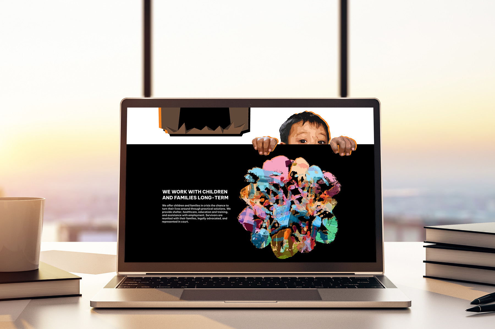

A persuasive landing page for Blue Dragon Children's Foundation
Overview
Blue Dragon Children's Foundation is a Vietnam-based NGO helping children and families in crisis. They work directly with high-risk communities, host events to raise funds and awareness, and rescue children from trafficking and abuse. This is an independent project to design a persuasive landing page to encourage viewers to become a volunteer and get involved in Blue Dragon's activities.
Tools
Figma, Adobe Illustrator, Photoshop
Timeline
Feb – Mar 2023 (5 weeks)
The challenge
Moving viewers to volunteer with Blue Dragon
Blue Dragon supports children and families in Vietnam located in high-risk communities or crisis situations — child labour, homelessness, abuse, trafficking, extreme poverty, etc. The organization provides survivors and high-risk youths with the necessary physical, mental, social, and legal aid and advocates for them to ensure that they are not forced into dangerous circumstances. They work to prevent abuse and homelessness and provide opportunities for employment, shelter, and education.
The foundation's homepage serves as its landing page. The page contains different types of content and call-to-actions, the variety of which can distract viewers.
“How might we utilize visual rhetoric to design a landing page that effectively encourages viewers to get involved with Blue Dragon's activities?”
Image from facebook.com/bluedragonvietnam
The solution
A focused landing page
This page provides comprehensive information on the organization's key activities to persuade the audience to get involved. The content focuses on conveying Blue Dragon's key activities and impact, aiming to encourage the viewer to participate by becoming a volunteer.
Design
Outlining content leading up to the call-to-action
I started with roughly blocking out individual sections and where images and texts should be. I wanted the content to first highlight the current situation, then the organization's activities, values, impacts, and finally show the call-to-action at the end.
Audience feedback
I gathered feedback on the rough wireframes to identify opportunities for improvement. Here are some key suggestions I received:
- The paragraphs can be shorten and key information should be better highlighted.
- The arguments should be clearer. There can be more distinctive separation between different arguments. Merging the arguments into three main points would strengthen the flow.
- The visual pun of children with angel wings and personification of the monster house are strong visuals. Moving the monster house to the start can make a stronger first impression.
- The testimonials can be portrayed in text bubbles spoken by illustrations of the children.
- More emphasis should be placed on the call-to-action.
Employing visual rhetorical tropes to strengthen arguments
I wanted to create graphics utilizing visual tropes instead of using regular photographs to be more convincing. Images from the organization's website and social media pages were collected as both visual inspirations and possible assets—all photographs used in this project, including those used in a collage, were sourced from Blue Dragon's public pages. Visual elements were created using Adobe Illustrator and Photoshop, either modified from sourced photographs or newly drawn in Illustrator.
Visual pun
The message “Help Children in Crisis Take Flight” was taken from the original website and visualized as a visual pun of children with angel wings.
Metaphor
Broken pieces of glass represent the fragility of childhood and the negative impacts of poverty, homelessness, child labour, and trafficking have had on children in these crisis situations.
The handprints placed together represent collaboration. The different sizes and colours demonstrate the diversity in age, personality, and background.
Personification
A regular Vietnamese “tube house” was personified as a monster to represent an abusive household and working environment that children may be forced into. An image on the original website was integrated into the design to show the children's fear and vulnerability.
Metonymy
From the website, I found quotes from three children who have received support from Blue Dragon: a student, a trafficking survivor, and a former street kid. Based on the content of the quote, I visualized the type of support they received through a closely-related object.
Deliver
Assembling the elements together
I arranged the graphic and text following the previous outline. I followed key colours from Blue Dragon's website to maintain consistency with their branding.
Prominent colours from the original website were identified and selected as accent colours, each given its own meaning. #00AEEF is used to highlight the organization's activities and values. #F5811F represents dangers and crisis situations. #ED145B shows the care and love the children should receive.
Hex
RGB
#FFFFFF
255, 255, 255
Hex
RGB
#F5811F
245, 129, 31
Hex
RGB
#ED145B
237, 20, 91
Hex
RGB
#00AEEF
0, 174, 239
Hex
RGB
#000000
0, 0, 0
Adding meaning and engagement with interactivity
I wanted to add simple interactions and animations to add another layer of meaning without the onscreen movement taking away from the overall message and experience. An interactive prototype was made in Figma to demonstrate the animations and how users can interact with different graphic elements onscreen.
Takeaways
I learned more about visual rhetorical tropes and creating them. It was initially challenging to ideate, but I was able to make persuasive visual elements.
Compatibility for multiple languages was a major consideration as Blue Dragon is an organization for Vietnamese communities. I looked for and used a font family that support diacritics used in the Vietnamese language. I didn't have the time to develop a Vietnamese version of this page within the duration of the project, but I'd like to come back and remake this landing page for Vietnamese audience. Designing a mobile version would also be a priority if I revisit this project.